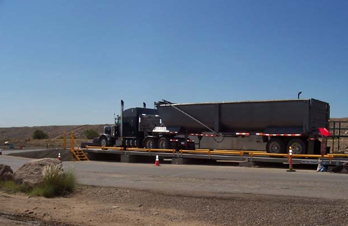
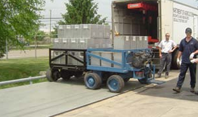

Pemeliharaan proaktif memastikan umur pakai yang panjang
Setelah timbangan Anda terpasang, beroperasi, dan tersertifikasi untuk digunakan, Anda mungkin siap menganggap proyek timbangan truk Anda berhasil. Namun, meluangkan waktu untuk mengembangkan program perawatan terjadwal saat timbangan masih baru dapat membuatnya tetap bekerja secara optimal dan memperpanjang umurnya. Ini juga merupakan waktu yang tepat untuk memanfaatkan keahlian pemasok timbangan Anda guna membahas rencana servis dan perbaikan timbangan Anda – baik yang direncanakan maupun yang tidak direncanakan. Sebaiknya Anda memikirkan cara menangani servis dan perbaikan sebelum benar-benar membutuhkannya.

Tanggung Jawab Pemilik Timbangan
Kebersihan. Pemilik timbangan perlu menjaga timbangan tetap bersih dan bebas dari penumpukan kotoran. Tujuan utamanya adalah memastikan bahwa material asing tidak menghalangi gerakan pemusatan modul timbangan yang diperlukan. Kotoran dapat meliputi:
• Barang dan material yang tumpah (kerikil, jagung, besi tua, dll.)
• Es dan salju
• Genangan air (pastikan sistem drainase berfungsi sebagaimana mestinya)
• Lumpur, tanah dan pasir
Kontrol lalu lintas. Lalu lintas truk yang masuk dan keluar dari timbangan harus dalam kecepatan yang terkendali. Pemasok timbangan Anda dapat memberikan rekomendasi untuk kecepatan masuk dan keluar berdasarkan aplikasi Anda. Yang terpenting, hal ini memastikan keselamatan mereka yang bekerja di dekatnya, serta pengemudi dan truk. Kedua, berhenti dan mulai bekerja secara tiba-tiba pada timbangan akan menyebabkan keausan berat pada komponen timbangan dan fondasi. Hal ini akan menyebabkan bobot yang tidak akurat dan kerusakan timbangan yang akan memerlukan perbaikan yang lebih sering.
Kesadaran. Pemilik timbangan harus menyadari cara kerja timbangan mereka dan bagian-bagian yang aus yang perlu diganti. Misalnya, ban mobil Anda pada akhirnya perlu diganti, dan sebagian besar pengemudi melakukannya sebelum ban benar-benar rusak. Hal yang sama berlaku untuk komponen timbangan, seperti penerima Load Cells, memeriksa bagian-bagian sistem, dan hubungan suspensi. Pada akhirnya, tingkat keausan akan mengharuskan penggantian bagian-bagian untuk mencegah kerusakan di kemudian hari. Biasanya, orang terbaik untuk mengevaluasi situasi tersebut adalah teknisi timbangan profesional.
Tes & Pemeliharaan Terjadwal
Ada dua jenis aktivitas terjadwal yang sedang berlangsung yang perlu dilakukan pada skala truk yang sah untuk diperdagangkan:
• Pemeriksaan / Kalibrasi / Sertifikasi Ulang Berat & Ukuran
Di banyak lokasi, pemasok timbangan diizinkan untuk melakukan kalibrasi awal dan pemeriksaan akurasi pada timbangan saat dipasang. Namun, biasanya setelah 60 hari, akurasi timbangan akan diverifikasi dengan pengujian yang dilakukan oleh otoritas Berat & Ukuran setempat. Pengujian W&M biasanya dilakukan pada interval yang telah ditentukan sebelumnya, paling sering setahun sekali. Pengujian tersebut dilakukan dengan salah satu dari tiga cara berikut:
■ Badan W&M diperlengkapi untuk melakukan pengujian tersebut dan melakukannya dengan truk dan teknisi mereka sendiri.
■ Pengujian dilakukan oleh penyedia layanan timbangan tetapi harus disaksikan oleh perwakilan badan W&M.
■ Pengujian dilakukan oleh penyedia layanan timbangan dan pemilik timbangan harus memberikan bukti pengujian dan hasilnya kepada badan W&M.
Pemasok timbangan Anda dapat memberi tahu Anda bagaimana hal ini dilakukan di lokasi Anda.
Tips: Ingatlah bahwa pemeriksaan kalibrasi standar dan kalibrasi ulang hanya memastikan bahwa keakuratan timbangan berada dalam toleransi yang sah. Pemeriksaan dan kalibrasi ulang tidak memastikan bahwa keakuratan timbangan sempurna. Untuk memantau keakuratan timbangan, mintalah penyedia layanan untuk mencatat keakuratan timbangan "sebagaimana ditemukan" dan "sebagaimana ditinggalkan". Hal ini membantu Anda tetap waspada terhadap masalah kinerja timbangan dan meminimalkan kerugian pendapatan.
• Perawatan Pencegahan yang Direkomendasikan Pabrikan
Pemasok timbangan Anda mungkin akan menawarkan program pemeliharaan yang mencakup kunjungan berkala dari teknisi timbangan yang akan menguji dan memeriksa timbangan serta melakukan pemeliharaan preventif. Meskipun jenis pemeliharaan tersebut mungkin tidak diwajibkan secara hukum, bagi banyak pemilik timbangan, manfaat terbesarnya adalah perlindungan dari waktu henti yang tidak direncanakan dan mahal. Program ini mungkin atau mungkin tidak mencakup persyaratan W&M, tergantung pada lokasi Anda. Perhatikan bahwa produsen mungkin memerlukan pemeliharaan preventif sebagai syarat garansi timbangan.
Menguji skala
Untuk menguji timbangan, teknisi atau agensi akan membawa truk khusus yang dilengkapi dengan beban uji bersertifikat ke lokasi timbangan. Beban ini akan diaplikasikan pada timbangan dalam interval beban tertentu dan di lokasi berbeda di dek timbangan. Teknisi akan memantau beban yang ditunjukkan oleh timbangan untuk memeriksa keakuratan dan konsistensinya. Teknisi akan memberikan laporan kepada pelanggan yang mencatat tingkat keakuratan timbangan, serta temuan dari pemeriksaan.
Apa yang terjadi jika timbangan tidak lulus uji akurasi Berat & Ukuran?
Jika kesalahan timbangan berada di luar toleransi hukum, lembaga W&M dapat mengeluarkan label kuning atau label merah (atau yang serupa). Label kuning adalah peringatan yang memberi pemilik timbangan jangka waktu (seringkali 60 hari) untuk mengkalibrasi ulang timbangan oleh penyedia layanan. Label kuning memungkinkan timbangan digunakan secara normal selama waktu tersebut. Sebaliknya, label merah mengharuskan timbangan ditutup segera. Timbangan tidak dapat digunakan hingga dikalibrasi ulang. Menghindari situasi tersebut merupakan alasan lain mengapa pemilik timbangan mungkin ingin bersikap proaktif dalam perawatan pencegahan.
Saat membahas program pemeliharaan, tanyakan kepada pemasok layanan apa saja yang dicakup. Tanyakan juga:
• Seberapa sering timbangan harus diperiksa? Berapa lama waktu yang dibutuhkan?
• Berapa lama waktu yang dibutuhkan untuk pengujian?
• Seberapa sering kita harus menguji?
• Seberapa sulit kalibrasi ulang jika kita menemukan kesalahan?
Prosedur perawatan pencegahan yang direkomendasikan dapat bervariasi antara kebutuhan merek dan model timbangan tertentu, serta aplikasi dan jumlah lalu lintas yang menggunakan timbangan tersebut. Namun, rekomendasi umum adalah, selain pengujian W&M, setiap timbangan truk harus menjalani pemeriksaan servis menyeluruh setidaknya setahun sekali.
Prosedur Inspeksi & Pemeliharaan Preventif
Prosedur dapat mencakup, tetapi tidak terbatas pada, hal-hal berikut:
Jembatan timbang dan pondasi
• Periksa pendekatan timbangan untuk mengetahui kerusakan
• Periksa timbangan dan fondasi untuk mengetahui ikatan antara dek dan fondasi
• Periksa tepi timbangan untuk mengetahui benda asing (batu, dll.)
• Periksa area di bawah timbangan untuk mengetahui penumpukan puing
• Uji pompa pembuangan (jika berlaku) dan periksa sistem drainase
• Periksa jembatan timbang untuk mengetahui retakan, korosi, pola tegangan, dan las yang rusak
• Periksa kopler modul dek untuk mengetahui kerusakan
• Periksa rel samping untuk mengetahui kerusakan
• Periksa kebebasan bergerak yang sesuai
• Periksa toleransi pada sistem suspensi/pemeriksaan, baik dari sisi ke sisi maupun dari depan ke belakang dan sesuaikan sesuai kebutuhan
Note: Periksa sistem pemeriksaan skala atau suspensi untuk memastikannya disetel dengan benar
Load Cells
• Angkat jembatan timbang dan lepaskan Load Cells untuk diperiksa
• Periksa pola keausan Load Cells untuk pemuatan yang tidak tepat di tengah
• Lumasi permukaan sambungan Load Cells
• Periksa pelat pemasangan Load Cells dan kencangkan sesuai kebutuhan
• Periksa kabel Load Cells untuk mengetahui kerusakan dan amankan kabel yang longgar
• Periksa sistem pentanahan dan proteksi petir, jika berlaku
Note: Periksa Load Cells, penerima, dan bagian penting lainnya secara berkala untuk mengetahui keausan

Note: Beberapa area, seperti permukaan pemasangan Load Cells, memerlukan pelumasan berkala
Kotak Sambungan/Junction Boxes (bila ada)
• Buka setiap kotak sambungan untuk memeriksa adanya serpihan dan kelembapan
• Pastikan sambungan kabel kotak sambungan aman
• Periksa segel kotak sambungan dan ganti jika perlu
Terminal dan Operasional
• Periksa pesan kesalahan dan/atau log data, jika tersedia
• Pastikan terminal terhubung ke tanah dengan benar
• Periksa segel W&M yang sesuai
• Lakukan tugas integrasi sistem apa pun seperti yang diminta oleh pelanggan
Siapa saja yang dapat melakukan servis pada timbangan saya?
Perusahaan bereputasi baik yang memenuhi syarat untuk melakukan layanan timbangan biasanya dapat melakukannya pada semua merek dan model truk timbangan. Anda mungkin ingin mengumpulkan beberapa penawaran untuk program perawatan dan servis. Pastikan untuk membandingkan konten program tersebut dan bukan hanya harganya. Sama seperti harganya yang dapat bervariasi, demikian pula tingkat layanan dan keahlian yang Anda terima. Pertanyaan yang bagus untuk ditanyakan dapat mencakup:
• Apakah ada tarif tetap untuk panggilan servis?
• Apakah ada jaminan waktu respons untuk panggilan servis?
• Apa kualifikasi teknisi?
• Bagaimana mereka mendapatkan suku cadang pengganti yang umum?
Special Note: Ketahuilah bahwa beberapa perusahaan timbangan memperoleh sebagian besar laba dari melakukan servis timbangan. Perusahaan-perusahaan tersebut mungkin menjual timbangan baru kepada pelanggan dengan margin laba yang sangat kecil, dengan harapan bahwa mereka akan memperoleh laba dari servis dan perbaikan timbangan di kemudian hari. Melihat harga pembelian yang sangat rendah, beberapa pembeli timbangan membeli sistem yang rawan servis sehingga mereka harus menganggarkan sejumlah besar uang setiap tahun untuk servis dan perbaikan. Itulah salah satu alasan untuk mempertimbangkan lebih dari sekadar harga pembelian awal saat membeli timbangan.
Layanan Darurat
Jika timbangan Anda tiba-tiba turun, bisnis Anda bisa merugi setiap jam Anda menunggu perbaikan. Idealnya, Anda menginginkan penyedia layanan dengan peralatan, perkakas, pengetahuan, dan suku cadang pengganti yang tepat untuk memperbaiki masalah dalam satu kali kunjungan.
Pertanyaan tambahan untuk calon penyedia layanan Anda:
• Jenis inventaris suku cadang apa yang mereka bawa?
• Berapa lama waktu tempuh dari lokasi mereka ke timbangan Anda?
• Urutan pengujian apa yang dilakukan teknisi saat mereka menghadapi timbangan yang tidak beroperasi dengan benar? Berapa lama waktu yang dibutuhkan?
• Berapa lama waktu yang dibutuhkan untuk mengganti suku cadang umum, misalnya, Load Cells, kabel atau saluran hidrolik, printer, dll.?
• Apakah layanan setelah jam kerja diperlukan dan tersedia?
• Seberapa cepat produsen dapat mengirimkan suku cadang ke organisasi layanan lokal?
• Peralatan apa yang dimiliki organisasi lokal, misalnya, dongkrak, peralatan uji, truk uji, boom, dan peralatan pengelasan?
• Apakah mungkin untuk melakukan diagnostik jarak jauh daripada harus bepergian ke lokasi timbangan
Menjalin kemitraan dengan tim layanan timbangan industri yang memiliki reputasi baik dapat membantu pemilik timbangan mana pun mendapatkan hasil maksimal dari timbangan mereka.
Garansi
Timbangan Anda harus disertai garansi pabrik. Sebagai pelanggan, ini adalah area di mana Anda harus meluangkan waktu untuk mengevaluasi berbagai pilihan, karena garansi dapat sangat bervariasi. Beberapa pabrik menawarkan garansi standar yang sangat terbatas dengan cakupan garansi yang diperluas dengan biaya tambahan. Luangkan waktu untuk benar-benar membaca ketentuan garansi dan menganalisis kategori berikut.
Apa saja yang dicakup garansi?
Tentukan tingkat dan durasi cakupan spesifik untuk hal berikut:
• Jenis komponen yang dicakup
• Jenis kerusakan yang dicakup
• Suku cadang pengganti
• Tenaga kerja di tempat
• Biaya perjalanan teknisi
• Petir (biasanya dibahas dalam bagian tersendiri dalam garansi)
Mungkin ada komponen tertentu yang dikecualikan dari garansi, atau mungkin tercakup dalam garansi terpisah, seperti printer.
Berapa lama garansi?
Beberapa produsen memberikan tingkat pertanggungan yang proporsional seiring bertambahnya usia timbangan. Itu berarti garansi mereka mungkin hanya mencakup sebagian dari perbaikan yang ditanggung setelah beberapa tahun.
Seberapa tanggapnya produsen terhadap cakupan garansi?
Apakah produsen timbangan memiliki entitas penjualan/layanan atau distributor lokal? Jika tidak, seseorang mungkin perlu dikirim dari lokasi lain. Mungkin terserah Anda untuk mempertimbangkan "bagaimana jika" dan menentukan seberapa tanggap menurut Anda suatu perusahaan dalam situasi darurat.
Singkatnya, semua timbangan truk pada akhirnya akan memerlukan servis. Sebagian besar pemilik timbangan ingin memiliki mitra yang dapat diandalkan untuk servis dan rencana untuk memastikan kinerja timbangan. Waktu yang dibutuhkan untuk mengembangkan rencana ini dapat sepadan dengan usaha yang dikeluarkan untuk mendapatkan ketenangan pikiran.